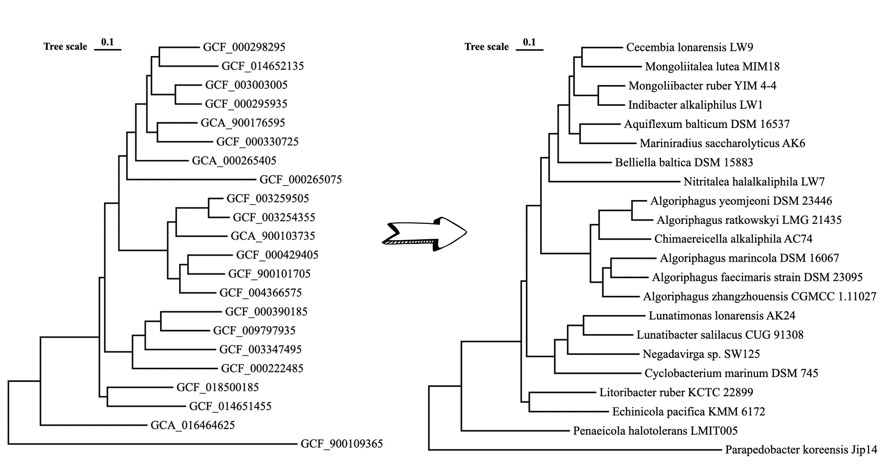

This dataset layer is used to change the name of leaf to a new one.

Layer data
- Example data
One column of new names is needed. If you leave a cell blank, the corresponding leaf name will not be changed.
| Node IDs | New name | ... |
|---|---|---|
| MT758060 | Parapedobacter soli DCY14 | ... |
| EF151805 | Algoriphagus yeomjeoni MSS 160 | ... |
| MW309385 | Algoriphagus ratkowskyi LMG 21435 | ... |
| AJ717393 | Anditalea andensis ANESC-S | ... |
- TSV format
Node_IDs New_name
EF151805 Parapedobacter soli DCY14
AY699794 Algoriphagus yeomjeoni MSS 160
AJ608641 Algoriphagus ratkowskyi LMG 21435
JF937440 Anditalea andensis ANESC-S
AJ744861 Aquiflexum balticum BA160
AJ564643 Belliella baltica BA134
FN393747 Cecembia lonarensis LW9
AJ717393 Chimaereicella alkaliphila AC74
MK238778 Cyclobacteriaceae bacterium DPMB0001
AJ575266 Cyclobacterium marinum LMG 13164
MT758060 Echinicola pacifica KCTC 12368
MT760162 Fontibacter flavus CCM 7650
NR_025743 Algoriphagus mannitolivorans JC2050
FM883672 Indibacter alkaliphilus LW1
HE985070 Lunatimonas lonarensis AK24
FR687202 Mariniradius saccharolyticus AK6
KT253329 Mongoliibacter ruber YIM 44
HQ326178 Mongoliicoccus roseus MIM28
MT759893 Mongoliitalea lutea KCTC 23224
KF309029 Negadavirga shengliensis SLG210-21
FM991866 Nitritalea halalkaliphila LW7
MH197303 Pleomorphovibrio marinus SW125
FR681897 Shivajiella indica NIO-S1
MW309385 Penaeicola halotolerans LMIT005
DQ112660 Rhodonellum psychrophilum GCM71
AJ575263 Algoriphagus winogradskyi LMG 21969
MK096443 Lunatibacter salilacus CUG 91308